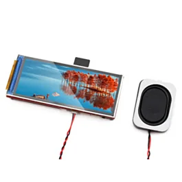

MaTouch ESP32-S3 Parallel TFT 3.16“ ST7701S
Makerfabs
MaTouch ESP32-S3 Parallel TFT 3.16“ ST7701S is a 3.16" 320x820 ESP32 display board by Makerfabs based on the ESP32-S3 with 16MB flash.
Features, ports & interfaces
- 16 MB flash
- Wi-Fi 4 (802.11 b/g/n, 2.4 GHz) – version from the ESP32-S3 datasheet
- Bluetooth 5 (LE) – version from the ESP32-S3 datasheet
Specifications
| Parameter | Value | Source |
|---|---|---|
| Screen size | 3.16" | source |
| Resolution | 320x820 | source |
| Shape | Rectangular | |
| MCU / SoC | ESP32-S3， 16MB Flash, PSRAM 8MB | source |
| MCU family | ESP32-S3 | source |
| Flash | 16MB | source |
| Wi-Fi | WiFi& Bluetooth 5.0 | source |
| Bluetooth | Bluetooth 5.0 | source |
| Category | Makerfabs MaTouch | |
| Display | 3.16 inch LCD display, 320 × 820 resolution, 64K color, RGB565 interface，brightness 600 nits, contrast 1500:1 | source |
| Vendor | Makerfabs |
Official links & documentation
Notes
- Auto-added by the monthly scraper on 2026-11-24 from the official product page; values are copied verbatim from that page, fields it does not state are empty. Not yet hand-reviewed.